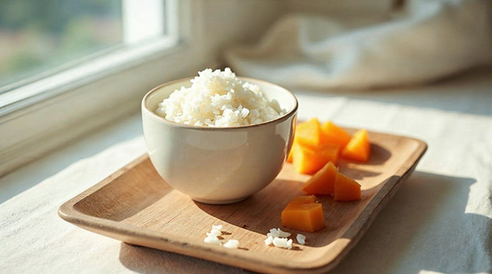
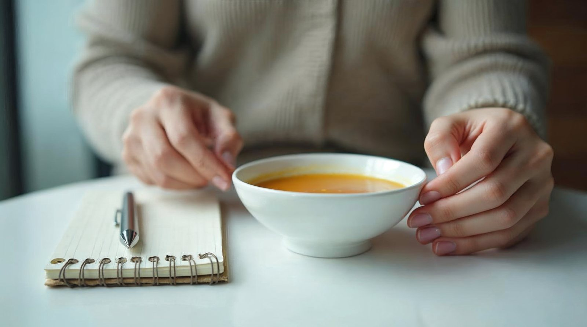
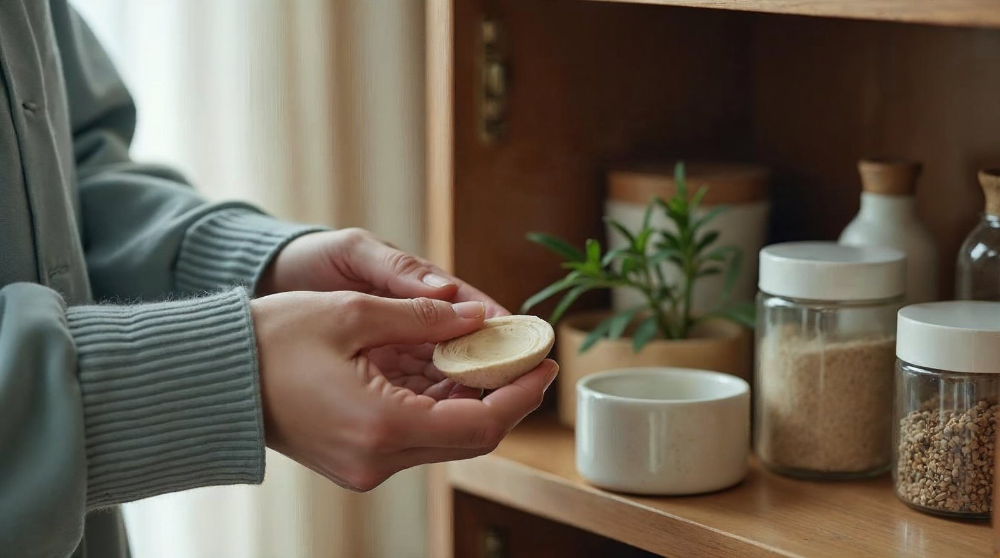
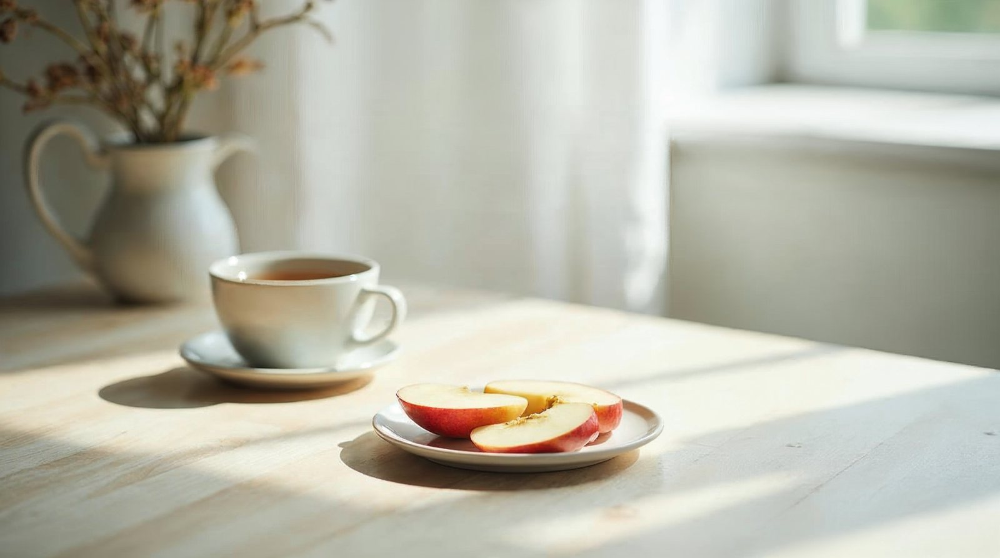
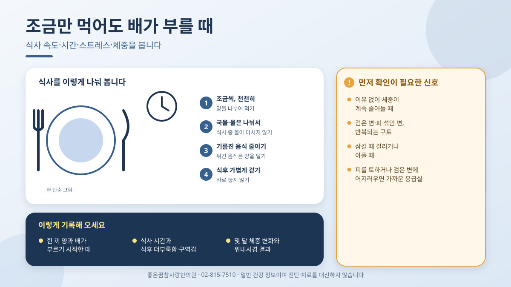

이종호 한의사 감수좋은꿈참사랑한의원 대표원장 (한의사 면허번호 19769)발행 2026-11-22 · 수정 2026-11-26
이 글의 차례
- 왜 이런 불편이 생길 수 있나요
- 왜 마음이 긴장하면 배가 먼저 차오를까요
- 한의학에서는 어떤 모습으로 나누어 보나요?
- 체중과 영양은 어떻게 지키나요?
- 비슷한 불편과는 어떻게 다른가요?
- 예를 들면 이런 경우입니다
- 스스로 점검해 보세요
- 먼저 이렇게 여쭙니다
- 첫 방문에는 이렇게 진행합니다
- 일상에서 먼저 해 볼 수 있는 것
- 어떤 음식이 부담이 덜할까요?
- 가족이나 함께 먹는 사람이 도와줄 수 있는 것
- 한의원에서 함께 살필 수 있는 경우
- 진료는 어떤 방향으로 이어지나요?
- 얼마나 지켜보고, 언제 상담하면 좋을까요
- 이렇게 기록해 오시면 상담이 쉬워집니다
- 이런 증상은 먼저 확인이 필요합니다
- 함께 읽으면 좋은 글
조금만 먹어도 금방 배가 부르다면 식사 속도와 식사 시간, 스트레스와 잠, 위가 음식을 받아들이고 내려보내는 움직임 등 여러 가지가 겹쳐 있을 수 있습니다. 하나씩 나누어 살피되, 체중이 줄거나 검은 변이 보인다면 위내시경 등 검사가 먼저입니다.
진료실에서 이 이야기를 꺼내시는 분들은 대개 "배는 고픈데 몇 숟가락 뜨면 더 못 먹겠다"고 말씀하십니다. 식탁에 앉을 때마다 남기는 밥이 신경 쓰이고, 같이 먹는 사람 눈치까지 보게 되니 마음도 함께 지치십니다. 그 마음부터 알아 두고 이야기를 시작하겠습니다.
이 글에서는 왜 위가 금방 차오르는지, 비슷한 불편과 어떻게 나누어 보는지, 첫 방문에 무엇을 여쭙는지, 집에서 식사를 어떻게 나누고 무엇을 기록하면 좋은지를 차례로 정리했습니다. 필요한 부분부터 골라 읽으셔도 괜찮습니다.
미리 말씀드리면, 조금만 먹어도 배가 부른 불편은 한 가지 원인으로 딱 잘라 말하기 어려운 경우가 많습니다. 그래서 진료실에서는 서두르지 않고 식사와 잠, 마음의 흐름을 하나씩 짚어 가며 실마리를 찾습니다.
왜 이런 불편이 생길 수 있나요
- 위는 음식이 들어오면 늘어나며 받아들이는데, 이 힘이 약해지면 조금만 먹어도 차오르는 느낌이 들 수 있습니다.
- 긴장하거나 스트레스가 많을 때 속이 더부룩하고 빨리 찬다고 느끼는 분이 많습니다.
- 기름진 음식이나 늦은 저녁은 위에 오래 머물러 다음 끼니의 포만감을 키우기도 합니다.
- 한의학에서는 기운이 떨어지고 입맛이 없는 상태도 함께 살핍니다.
- 빨리 먹거나 식사 중 물을 많이 마시면 위가 금방 차오르는 느낌이 커질 수 있습니다.
조금 더 풀어 말씀드리면, 위는 처음 음식이 들어올 때 윗부분이 풍선처럼 부드럽게 펴지면서 자리를 만듭니다. 이 펴지는 움직임이 둔해지면 실제로 먹은 양은 적어도 위 입구 쪽이 금세 꽉 찬 것처럼 느껴집니다.
또 위에서 장으로 음식을 내려보내는 속도가 느려지면 전에 먹은 음식이 아직 남아 있는 상태에서 다음 끼니를 맞게 됩니다. 아침을 먹었는데 점심때까지 속이 묵직하다는 분이 이런 흐름에 가깝습니다.
한의학에서는 이런 상태를 소화하는 기운, 즉 비위의 힘이 떨어졌다고 보기도 합니다. 잠이 부족하거나 오래 걱정을 안고 지내면 입맛과 소화가 함께 처지는 경우가 많아, 위만 따로 떼어 보지 않고 생활 전체를 함께 봅니다.
왜 마음이 긴장하면 배가 먼저 차오를까요
위와 장은 마음의 상태에 꽤 민감하게 반응합니다. 긴장하면 몸은 싸우거나 피할 준비를 하느라 소화에 쓰던 힘을 잠시 줄이는데, 이 상태가 길어지면 위가 펴지는 힘도, 음식을 내려보내는 힘도 함께 느려질 수 있습니다.
그래서 중요한 발표를 앞둔 날이나 마음이 불편한 사람과 함께 먹는 자리에서는 평소보다 훨씬 적게 먹어도 배가 꽉 찬다고 느끼게 됩니다. 반대로 편한 사람과 천천히 먹는 주말에는 비교적 잘 드신다는 분도 많습니다.
이런 차이가 보인다면 위 자체보다 하루의 긴장과 잠이 함께 얽혀 있을 가능성을 생각합니다. 진료 때 "어떤 자리에서 더 못 드시는지"를 꼭 여쭙는 이유이기도 합니다.
한의학에서는 어떤 모습으로 나누어 보나요?
같은 "금방 배가 부르다"는 말씀도 몸 상태에 따라 결이 조금씩 다릅니다. 진료실에서는 대략 세 갈래로 나누어 생각해 보고, 한 분에게 여러 모습이 겹쳐 있는 경우도 흔합니다.
- 기운이 처진 모습: 쉽게 피곤하고, 말소리에 힘이 없고, 먹고 나면 졸리며 대변이 무른 편인 경우입니다. 소화하는 힘 자체가 떨어졌다고 봅니다.
- 긴장이 쌓인 모습: 한숨이 잦고, 명치나 옆구리가 답답하며, 신경 쓰는 날 증상이 확 심해지는 경우입니다. 마음의 긴장이 위의 움직임을 막고 있다고 봅니다.
- 음식이 쌓인 모습: 트림에서 먹은 음식 냄새가 나고, 배를 누르면 묵직하며, 야식이나 과식 뒤에 시작된 경우입니다.
이렇게 나누는 이유는 생활에서 조심할 점과 상담 방향이 조금씩 달라지기 때문입니다. 진맥과 문진, 필요할 때 설진·복진을 함께 보고 어느 쪽에 가까운지 말씀드립니다.
체중과 영양은 어떻게 지키나요?
식사량이 줄어든 기간이 길어지면 체중과 근육이 함께 빠지기 쉽습니다. 기운이 떨어지면 다시 소화가 더 처지는 흐름이 생길 수 있어, 적게 먹는 동안에도 영양을 놓치지 않는 것이 중요합니다.
양을 늘리기 어렵다면 한 숟가락에 담기는 영양을 높이는 쪽으로 생각해 보세요. 밥 위에 달걀이나 두부를 올리고, 죽에 다진 고기나 생선을 조금 넣는 식입니다. 간식으로 두유나 요거트, 견과 몇 알을 더하는 것도 방법입니다.
일주일에 한 번, 같은 시각에 체중을 재어 적어 두세요. 한 달 사이 눈에 띄게 줄어든다면 생활 조절만으로 지켜보기보다 병원 확인을 먼저 받으시는 것이 안전합니다.
비슷한 불편과는 어떻게 다른가요?
- 식후 더부룩함: 다 먹은 뒤 한참 동안 속이 답답한 쪽이라면, 조기 포만감은 먹는 도중에 더 이상 들어가지 않는 느낌이 앞섭니다. 두 가지가 함께 있는 분도 많습니다.
- 속쓰림: 명치가 타는 듯 쓰리거나 신물이 올라온다면 위산과 관련된 불편을 먼저 생각합니다.
- 구역감: 배가 부르다기보다 울렁거려 먹기 싫다면 다른 원인을 함께 확인합니다.
- 입맛 저하: 배가 차는 것이 아니라 아예 먹고 싶은 마음이 들지 않는다면 잠, 기분, 복용 중인 약을 함께 여쭙니다.
말로 표현하기 어려우시면 "몇 숟가락째에 멈추게 되는지", "먹고 나서 몇 시간 동안 불편한지" 두 가지만 기억해 오셔도 구분하는 데 큰 도움이 됩니다.
예를 들면 이런 경우입니다
- 예를 들어 점심을 책상에서 10분 만에 먹고 바로 회의에 들어가는 직장인이라면, 저녁에는 배가 고픈데도 몇 숟가락 먹고 수저를 내려놓게 되는 경우가 있습니다. 이때는 점심 식사 속도와 저녁 식사 시각부터 함께 봅니다.
- 예를 들어 시험이나 이사처럼 신경 쓸 일이 몰린 시기에 갑자기 식사량이 줄었다면, 마음의 긴장이 위의 움직임에 영향을 주고 있지 않은지 잠과 함께 살핍니다.
- 예를 들어 늦은 밤 야식을 자주 먹는 분이 아침마다 속이 묵직해 아침을 거르고 점심도 조금밖에 못 먹는다면, 하루 식사의 순서를 다시 짜 보는 것부터 시작합니다.
스스로 점검해 보세요
- 한 끼를 15분 안에 끝내는 날이 많다
- 식사 중 물이나 국물을 많이 마신다
- 저녁 식사가 밤 9시 이후인 날이 일주일에 사흘 이상이다
- 아침에 일어나도 전날 먹은 것이 남아 있는 느낌이 든다
- 신경 쓸 일이 많은 주에 식사량이 눈에 띄게 준다
- 잠이 얕거나 자주 깬다
- 최근 몇 달 사이 옷이 헐렁해질 만큼 체중이 줄었다
마지막 항목에 해당한다면 한의원보다 내과에서 먼저 확인받으세요. 나머지는 진료 때 말씀해 주시면 어디서부터 살필지 정하는 데 도움이 됩니다.

먼저 이렇게 여쭙니다
- 언제부터 이런 일이 있었고, 한 끼에 어느 정도 먹으면 배가 부른가요?
- 최근 몇 개월 사이 체중이 의도하지 않게 줄었나요?
- 식사 후 속쓰림, 구역감, 더부룩함이 함께 있나요?
- 식사 시간이 불규칙하거나 급하게 먹는 편인가요?
- 잠은 몇 시에 들고, 중간에 깨는 일이 있나요?
- 지금 복용 중인 약이나 영양제가 있나요?
첫 방문에는 이렇게 진행합니다
먼저 문진으로 하루 세 끼를 언제, 어디서, 얼마나 빨리 드시는지 여쭙니다. 배가 부르기 시작하는 시점과 식후 불편이 얼마나 이어지는지, 대변과 잠, 요즘 마음의 부담도 함께 듣습니다.
진맥은 모든 분께 짚습니다. 필요하다고 판단될 때 혀의 색과 설태를 보는 설진, 배를 눌러 긴장과 온기를 확인하는 복진을 더합니다. 받으신 위내시경이나 혈액 검사 결과가 있다면 함께 보며 이야기를 나눕니다.
그다음 들은 내용을 정리해 지금 어떤 흐름으로 보이는지, 앞으로 무엇을 살필지 설명해 드립니다. 한약을 상담할 때는 지금 드시는 약을 먼저 확인하고, 임신 중이거나 가능성이 있다면 먼저 말씀해 주세요.

일상에서 먼저 해 볼 수 있는 것
- 숟가락을 자주 내려놓으며 천천히, 꼭꼭 씹어 먹어 보기
- 식사 중 국물이나 물을 한꺼번에 많이 마시지 않기
- 기름지고 튀긴 음식은 양을 줄여 보기
- 식사 후 바로 눕지 않고 가볍게 걷기
- 하루 세 끼를 네다섯 번의 작은 식사로 나눠 보기
작은 식사로 나눌 때는 오전 10시쯤 바나나 반 개나 삶은 달걀, 오후 4시쯤 두유 한 팩이나 떡 한 조각처럼 부담 없는 간식을 끼워 넣는 방식이 편합니다. 대신 세 끼의 양을 그만큼 조금 줄여 하루 전체가 넘치지 않게 맞춥니다.
밥과 반찬의 순서도 바꿔 볼 만합니다. 배가 금방 차는 분은 국물과 채소로 배를 먼저 채우기보다, 밥과 단백질 반찬을 조금씩 먼저 드시는 편이 필요한 영양을 챙기기 쉽습니다.
저녁은 잠들기 3시간 전에는 마치고, 늦게 먹게 되는 날은 기름진 음식 대신 죽이나 국에 밥을 조금 만 것처럼 가볍게 드셔 보세요. 다음 날 아침 속이 한결 가볍다는 분이 많습니다.
어떤 음식이 부담이 덜할까요?
배가 금방 차는 시기에는 같은 양이라도 위에 오래 머무는 음식과 빨리 내려가는 음식을 나눠 생각해 보시면 좋습니다. 튀김, 삼겹살, 크림 소스처럼 기름이 많은 음식은 위에 오래 남아 다음 끼니까지 묵직함을 남기기 쉽습니다.
- 부담이 덜한 편: 흰살생선, 두부, 달걀찜, 잘 익힌 채소, 부드러운 밥이나 죽
- 양을 줄여 볼 것: 튀김, 기름진 고기, 크림이나 치즈가 많은 음식
- 천천히 늘려 볼 것: 생채소 샐러드, 잡곡, 콩류처럼 오래 씹어야 하는 음식
- 식사 중에는 줄일 것: 탄산음료, 많은 양의 국물
이 목록은 정답이 아니라 출발점입니다. 사람마다 편한 음식이 달라서, 일주일쯤 드셔 보며 어떤 음식 뒤에 배가 오래 찼는지 적어 보시면 나에게 맞는 목록이 생깁니다.
가족이나 함께 먹는 사람이 도와줄 수 있는 것
조금만 먹는 모습을 보면 가족은 걱정이 앞서 "좀 더 먹어"라고 권하게 됩니다. 그런데 이미 배가 찬 상태에서 억지로 더 먹으면 식후 불편이 길어지고, 다음 식사가 더 부담스러워질 수 있습니다.
대신 한 그릇에 많이 담기보다 작은 그릇에 조금씩 덜어 드리고, 식사 시간을 넉넉히 잡아 서두르지 않게 해 주시는 편이 도움이 됩니다. 식탁에서 하루의 걱정거리를 꺼내기보다 편한 이야기를 나누는 것도 작지 않은 배려입니다.

한의원에서 함께 살필 수 있는 경우
- 조금만 먹어도 배가 빨리 차는 경우 위장의 기능과 식사 속도를 살핍니다.
- 식후 답답함이 오래 가는 경우 소화 리듬과 생활 습관을 함께 살핍니다.
- 식욕이 떨어져 식사가 불규칙한 경우 전체 컨디션과 수면을 함께 살핍니다.
좋은꿈참사랑한의원에서는 하루 식사 흐름과 식후 불편을 자세히 듣고, 진맥을 기본으로 하고 필요하다고 판단될 때 설진·복진을 더해 배와 몸 상태를 살핍니다. 그 뒤 상태에 맞춰 침이나 한약 상담 등을 정하고, 귀가 전에는 식사량을 나누는 방법과 다음에 확인할 점을 알려 드립니다. 위내시경 등 검사가 필요해 보이면 먼저 안내합니다.
진료는 어떤 방향으로 이어지나요?
침은 배와 손발의 자리를 골라 위의 움직임과 몸의 긴장을 함께 살피는 방향으로 놓습니다. 배가 차고 굳어 있는 분은 온열 물리치료로 배를 따뜻하게 하며 쉬는 시간을 갖기도 합니다.
한약은 기운이 처진 모습인지, 긴장이 쌓인 모습인지에 따라 방향이 달라져 상담을 거쳐 정합니다. 지금 드시는 약과 영양제를 먼저 확인하고, 드시는 동안 불편하면 복용을 멈추고 연락해 주시도록 말씀드립니다.
다시 오시면 지난번 이후 몇 숟가락째에 배가 찼는지, 식후 불편이 얼마나 이어졌는지, 잠은 어땠는지부터 이어서 여쭙니다. 그 변화를 보며 다음 진료와 생활에서 바꿀 점을 함께 조정합니다.
얼마나 지켜보고, 언제 상담하면 좋을까요
- 식사 속도와 저녁 시각, 끼니 나누기를 2주 정도 해 보며 몇 숟가락째에 배가 차는지 적어 보세요.
- 생활을 바꿔도 한 달 넘게 식사량이 계속 줄어 있다면 상담을 권합니다.
- 체중이 이유 없이 빠지거나, 삼키기 어렵거나, 검은 변이 보인다면 기다리지 말고 병원 검사를 먼저 받으세요.

이렇게 기록해 오시면 상담이 쉬워집니다
- 한 끼에 먹은 양과 배가 부르기 시작한 시점
- 식사 시간과 식후 불편(더부룩함, 구역감 등)
- 최근 몇 달 체중 변화
- 복용 중인 약과 받은 위내시경 결과
기록은 거창할 필요가 없습니다. 휴대폰 메모에 "점심 12:30, 밥 1/3공기, 10분, 다섯 숟가락째 참, 오후 3시까지 묵직" 정도로 한 줄씩만 남겨도 일주일이면 흐름이 보입니다.
여기에 그날 잠을 몇 시간 잤는지, 신경 쓰인 일이 있었는지를 한 단어로 덧붙여 보세요. 배가 유난히 빨리 찬 날과 잠, 긴장이 맞물리는지 진료실에서 함께 짚어 볼 수 있습니다.
이런 증상은 먼저 확인이 필요합니다
- 이유 없이 체중이 계속 줄어드는 경우
- 음식을 삼킬 때 걸리거나 아픈 경우
이런 신호가 있으면 한의원보다 가까운 병원이나 응급실을 먼저 찾으세요.
함께 읽으면 좋은 글
- 식사 뒤에 속이 더부룩한 것은 무엇 때문이고, 속쓰림과는 어떻게 다른가요?
- 속쓰림인지 더부룩함인지 헷갈릴 때는 어떤 말로 설명하면 좋을까요?
- 트림이 하루 종일 잦을 때는 무엇 때문이고 어떻게 살피나요?

여쭙는 것
- 언제부터 이런 일이 있었고, 한 끼에 어느 정도 먹으면 배가 부른가요?
- 최근 몇 개월 사이 체중이 의도하지 않게 줄었나요?
- 식사 후 속쓰림, 구역감, 더부룩함이 함께 있나요?
생활에서 해 볼 것
- 숟가락을 자주 내려놓으며 천천히, 꼭꼭 씹어 먹어 보기
- 식사 중 국물이나 물을 한꺼번에 많이 마시지 않기
- 기름지고 튀긴 음식은 양을 줄여 보기
한의원에서 함께 살필 것
- 조금만 먹어도 배가 빨리 차는 경우 위장의 기능과 식사 속도를 살핍니다.
- 식후 답답함이 오래 가는 경우 소화 리듬과 생활 습관을 함께 살핍니다.
- 식욕이 떨어져 식사가 불규칙한 경우 전체 컨디션과 수면을 함께 살핍니다.
먼저 확인이 필요한 신호
- 이유 없이 체중이 계속 줄어드는 경우
- 음식을 삼킬 때 걸리거나 아픈 경우
한눈에 보는 표
| 구분 | 핵심 |
|---|---|
| 여쭙는 것 | 언제부터 이런 일이 있었고, 한 끼에 어느 정도 먹으면 배가 부른가요? 최근 몇 개월 사이 체중이 의도하지 않게 줄었나요? |
| 생활에서 해 볼 것 | 숟가락을 자주 내려놓으며 천천히, 꼭꼭 씹어 먹어 보기 식사 중 국물이나 물을 한꺼번에 많이 마시지 않기 |
| 한의원에서 함께 살필 것 | 조금만 먹어도 배가 빨리 차는 경우 위장의 기능과 식사 속도를 살핍니다. 식후 답답함이 오래 가는 경우 소화 리듬과 생활 습관을 함께 살핍니다. |
| 먼저 확인이 필요한 신호 | 이유 없이 체중이 계속 줄어드는 경우 음식을 삼킬 때 걸리거나 아픈 경우 |
자주 묻는 질문
한의원에서는 어떻게 살피나요?
식사량과 속도, 식후 증상, 대변, 잠과 스트레스를 함께 묻고 생활 전체의 리듬 속에서 살핍니다.
소화제를 계속 먹어도 되나요?
소화제를 자주 찾게 된다면 원인을 먼저 확인해 보는 것이 좋습니다. 복용 중인 약은 임의로 늘리거나 중단하지 말고 처방한 의사나 약사와 상의하세요.
검사가 먼저 필요한가요?
체중이 줄거나 증상이 오래가면 병원에서 먼저 확인하는 것이 안전합니다.
입맛이 없어도 챙겨 먹어야 하나요?
양이 적어도 끼니를 건너뛰지 않는 것이 좋습니다. 부드럽고 소화가 쉬운 음식부터 조금씩 드셔 보세요.
위내시경에서 이상이 없다고 했는데 계속 배가 금방 차요.
검사 결과를 가져오시면 함께 보고, 식사 속도와 시간, 잠과 긴장 상태를 이어서 살핍니다. 증상이 달라지면 다시 병원 확인을 권합니다.
좋은꿈참사랑한의원은 재진 때 지난번 이야기부터 이어서 여쭙니다. 진료시간과 예약은 오시는 길에서 확인하세요.
어디서 상담받을 수 있나요?
좋은꿈참사랑한의원은 서울 동작구 만양로2길 2 신성빌딩 3층·5층(서울 동작구 상도동, 7호선 상도역 3번 출구 근처)에 있습니다. 한의사 3명(이종호 대표원장, 조영기 수석진료원장, 정원영 진료원장)이 진료합니다. 진료시간은 평일 09:30~20:00(점심 13:00~14:00), 토·일·공휴일 09:30~15:00이며, 방문 전 전화로 확인을 권합니다. 예약은 네이버 예약, 카카오톡 상담, 전화 02-815-7510로 받습니다.
이 글은 일반적인 건강 정보이며 개인의 진단이나 치료를 대신하지 않습니다. 증상이 있거나 복용 중인 약이 있다면 진료를 통해 확인하세요. 치료 효과는 개인마다 다를 수 있습니다.
작성 기준: 일반적으로 알려져 있는 건강 정보를 참고해 정리했습니다(대표원장 감수). 증상 기록은 1~2주 동안 하루 1회, 비슷한 시간에 적어 오시면 지난 상태와 비교하기 쉽습니다.